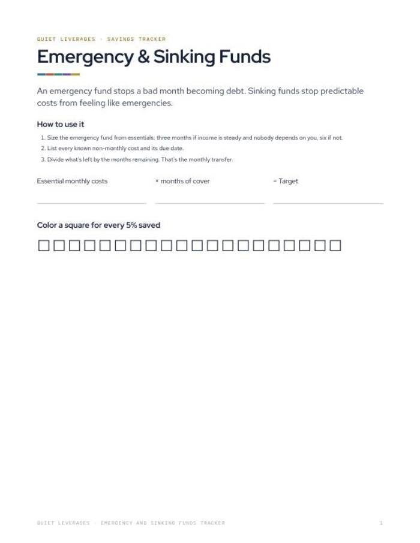
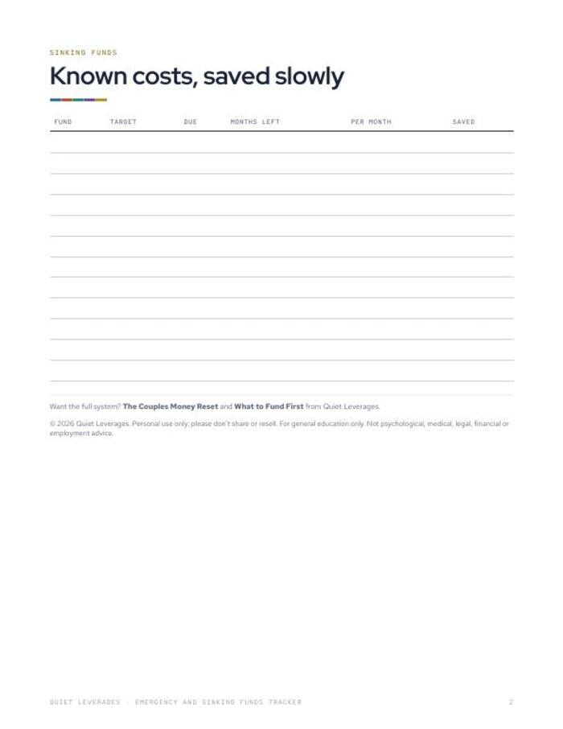

The car insurance bill is not an emergency. It is a date you already know.
Size your emergency fund from your essentials, and turn predictable costs into small monthly transfers.
Google Sheet (.xlsx) + printable PDF. Opens in Google Sheets or Excel. Instant download.

Sized from your essentials
Your emergency fund target comes from what you must pay each month.
Monthly amount from the due date
Enter a cost and when it is due. The sheet works out what to set aside.
Progress you can see
Months to go and a progress bar show how close you are.
jobs: emergency fund and sinking funds
files: PDF and Google Sheet
of US adults began 2026 feeling financial stress. Known costs that arrive as surprises make it worse. Sinking funds take the surprise out.
NEFE, Jan 2026What changes after you fill it in
A target that fits you
Essential monthly costs times the months of cover you choose gives one number.
Predictable costs, planned
Each non-monthly cost gets a due date and a monthly transfer.
A clear read on progress
Months left and a progress bar, so you can see it grow.
Paper copy included
A printable version with squares to color in as you save.
Everything in the download
- Google Sheet (.xlsx). Emergency fund sized from essentials, months to go, progress bar.
- Sinking funds tab. Works out the monthly amount from each due date.
- Printable PDF. Emergency fund page and sinking funds page.
- Opens in Google Sheets or Excel. In Google Sheets, use File > Import.

Size it, list it, divide it
Size the fund
Add your essential monthly costs and choose months of cover. Three is common; it depends on how steady your income is.
List known costs
Every non-monthly cost with its due date.
Set the transfer
Divide what is left by the months remaining. That is the monthly amount.
A good fit if the same bills keep ambushing you
Use this if
- You have annual or irregular costs that always feel like a hit.
- You want a target for your emergency fund that is based on your own numbers.
- You like a sheet that does the dividing.
Skip it if
- You want to know what order to fund things in. See What to Fund First, which is free.
- You have high-interest debt to rank. See the Debt Payoff Planner.
- You want investing guidance. This is a savings tracker.
Why a buffer matters
of US adults began 2026 feeling financial stress.
NEFE, Jan 2026are very confident they split spare money well across debt, savings and retirement. Among people earning $200K+, 64% are only somewhat confident.
Vestwell, June 2026report money dysmorphia: feeling broke despite a healthy position.
Intuit Credit Karma, via FinderWhat readers say about Emergency and Sinking Funds Tracker
Turn known costs into small transfers
A sheet that sizes the fund and does the dividing, plus a printable copy.
- Google Sheet (.xlsx) with emergency fund and progress bar
- Sinking funds tab with monthly amounts
- Printable PDF
Before you decide
Do I need Google Sheets?
No. It is an .xlsx file that opens in Google Sheets (File > Import) or Excel. The printable PDF also works on its own.
How many months should I choose?
Three months of essentials is a common start. How many suits you depends on how steady your income is. The sheet lets you set your own.
What is a sinking fund?
A small amount set aside each month for a cost you know is coming, such as an annual bill. The tab works out the monthly figure from the due date.
How long does setup take?
List your essentials and your known costs with due dates. Most people finish in one sitting.
Can I print it?
Yes. US Letter, and it prints on A4 at fit to page. It also works in any PDF app on a tablet.
Is this financial advice?
No. General education, not financial advice.
The next step after this one


Know the date, know the amount.
Size the fund and set the transfers once.
Get it for $7Instant download on Gumroad.